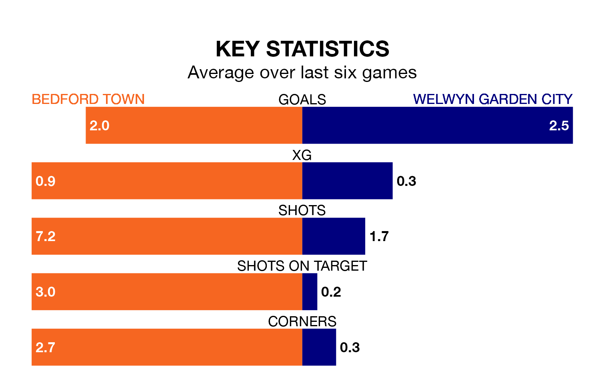

Welwyn Garden City face a challenge to maintain their high-scoring form away against a tight Bedford Town defence on Sunday.
With 53 goals in 23 games, Welwyn Garden are the joint-second-highest scorers in the Southern League Division One Central ahead of the 1pm kick-off.
They face a Bedford side who have scored 51 in 26 matches, but conceded only 23 goals, putting them top of the league's tightest defences.
Bedford are top of the table after 26 games, of which they have won 14 and drawn eight, earning 50 points.
Welwyn Garden are 11 places behind Town in 12th, with 11 wins and two draws putting them on 35 points.
In the last five years, Bedford and Welwyn Garden have played each other on four occasions. Bedford won three of them and Welwyn Garden one.
On average, Bedford scored 1.8 goals and Welwyn Garden 1.2 in those matches.
Their last meeting was on September 30, when Bedford won 3-1 away.
The hosts are in reasonable form in the Southern League Division One Central, with three wins and two draws from their last six games.
With three wins and three losses over that period, City's form is slightly worse – they have taken nine points from 18, compared to Bedford's 11.
Bedford's last match was on February 27, a 2-0 win against AFC Kempston Rovers.
Welwyn Garden beat Hertford Town 2-1 last time out, on March 2.
Updated: 09:34 (UTC), 08/03/24